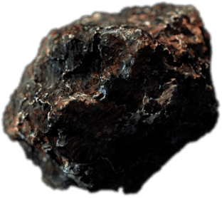

专属新色，
来自外太空的一度灰
高雾 AG 玻璃微露类金属光泽，呈现来自外太空的材质质感，细腻温润不沾指纹。百次灰阶调色，匠心凝炼来自宇宙的高级浪漫。观赏，赏心悦目。上手，爱不释手。
一体流线机身，
把握未来流行
一体流线设计，打破影像镜组与机身的边界，过渡行云流水。 整片玻璃在热锻下成型，前后 3D 曲面过渡。指尖从机身边缘平滑拂至摄像头边缘，触感流畅，浑然天成。
体重很轻，
防水很行
机身轻约 193 克，握感轻盈曼妙。
IP68
级1防尘防水，无惧风尘，亦无惧风雨。
EXPLORING…20%